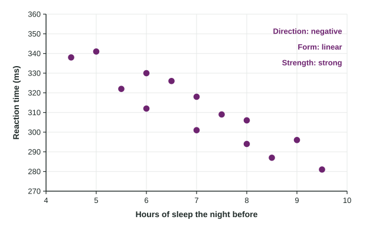

Graphical Representations Between Two Quantitative Variables
A scatterplot plots two quantitative variables, explanatory on the horizontal axis and response on the vertical.
Part 1 · Hook
Why this matters
Part 2 · Before you start
What this builds on
Part 3 · Prerequisite check
Quick check before you start
1. In a study of whether study time affects test scores, which is the response variable?
- Test score
- Study time
- The number of students
- The test date
Show the answer
The response is the outcome the study measures; study time is the explanatory variable.
- Correct: Test score:
- Study time:
- The number of students:
- The test date:
2. Which variable is quantitative?
- Reaction time in milliseconds
- Favorite sport
- Eye color
- Grade (freshman, sophomore, ...)
Show the answer
A quantitative variable takes numerical values that can be averaged.
- Correct: Reaction time in milliseconds:
- Favorite sport:
- Eye color:
- Grade (freshman, sophomore, ...):
Part 4 · See it
See it first

Part 5 · Step by step
How it works, step by step
- Two quantitative variables are measured on the same individualsplot one point per individual: explanatory variable on the horizontal axis, response on the vertical axis
- Look at how changes as increasesdirection: positive (up together), negative (one up, one down) or none
- Look at the shape and the scatter around itform (linear or curved) and strength (how closely points follow the form)
- Look for points away from the patternunusual features: outliers and clusters, which deserve a reason, and then describe it all in context
Part 6 · Key ideas
Key ideas
- A scatterplot shows the relationship between two quantitative variables measured on the same individuals.
- Describe direction, form, strength and unusual features, in context: "a strong, negative, linear association between hours of sleep and reaction time, with no outliers".
- Strength is how closely points follow the pattern, not how steep it is; a curved pattern can be strong.
- Association is not causation: observational data show a pattern, not its cause.
Part 7 · Misconception
A common mistake
The wrong idea: A steep trend in a scatterplot means a strong association.
What actually happens: Steepness and strength are different. Strength is how tightly the points cluster around the pattern; a gentle trend with little scatter is stronger than a steep trend with lots of scatter.
Part 8 · Check yourself
Check yourself
Exam-style questions. Anything you miss goes into your review queue.
Graph
Sleep and reaction time
1. Which variable is the explanatory variable, and where does it go?
- Hours of sleep, on the horizontal axis
- Reaction time, on the horizontal axis
- Either one, because the plot is the same both ways
- Hours of sleep, on the vertical axis
Show the answer
Explanatory on the horizontal axis, response on the vertical axis.
- Correct: Hours of sleep, on the horizontal axis: Right: sleep is thought to help explain reaction time, so it is the explanatory variable, plotted on the x axis.
- Reaction time, on the horizontal axis: Reaction time is the response: the class wants to see how it changes with sleep.
- Either one, because the plot is the same both ways: Switching the axes changes the picture and the story. The convention puts the explanatory variable on the x axis.
- Hours of sleep, on the vertical axis: The explanatory variable goes on the horizontal axis; the response goes on the vertical axis.
2. What is the direction of the association?
- Negative: students who slept more tended to have shorter reaction times
- There is no direction, since the points do not lie exactly on a line
- Negative: students who slept more tended to have longer reaction times
- Positive: students who slept more tended to have shorter reaction times
Show the answer
Direction: does tend to rise or fall as increases?
- Correct: Negative: students who slept more tended to have shorter reaction times: Right: the points fall from upper left to lower right, so larger x values go with smaller y values.
- There is no direction, since the points do not lie exactly on a line: Points need not be on a line to show a clear trend. These clearly fall from left to right.
- Negative: students who slept more tended to have longer reaction times: The points with more sleep sit lower, at shorter reaction times.
- Positive: students who slept more tended to have shorter reaction times: "Positive" means both go up together. Here one goes up as the other goes down, which is negative.
3. Which description of the form and strength fits the plot?
- Linear and strong: points stay close to a straight line
- Curved and strong: the points bend more and more as sleep increases
- Strong, because the trend drops steeply as sleep increases
- Linear and weak: the points are scattered far from any pattern
Show the answer
Form: straight or curved. Strength: how tightly the points follow the form.
- Correct: Linear and strong: points stay close to a straight line: Right: the points follow a straight band with little scatter around it.
- Curved and strong: the points bend more and more as sleep increases: The points do not bend; they follow one straight trend.
- Strong, because the trend drops steeply as sleep increases: Strength is how closely points follow the pattern, not how steep it is.
- Linear and weak: the points are scattered far from any pattern: The scatter around the trend is small compared with the overall drop.
4. Describe the association in context.
Write the conclusion in context.
Show the answer
Strength, direction, form and unusual features, in context.
- A full-credit answer: There is a strong, negative, linear association between hours of sleep the night before and reaction time for these students, with no clear outliers: students who slept more tended to react faster.
5. Plot A shows points tightly packed around a gentle upward trend; plot B shows points loosely scattered around a steep upward trend. Which association is stronger?
- Neither, because strength needs a negative trend
- Plot A, because its points are closer to the pattern
- Both are equally strong, since both are positive
- Plot B, because its trend is steeper
Show the answer
Strength is tightness around the pattern.
- Neither, because strength needs a negative trend: Positive and negative associations can both be strong.
- Correct: Plot A, because its points are closer to the pattern: Right: strength measures how closely points follow the form, not the steepness.
- Both are equally strong, since both are positive: Two positive associations can differ in strength.
- Plot B, because its trend is steeper: Steepness is about how much changes per unit of , not about strength.
6. What does a positive association between two quantitative variables mean?
- Each increase in one causes an increase in the other
- The points lie exactly on an upward line
- Above-average values of one tend to go with above-average values of the other
- Both variables take positive values
Show the answer
Positive: as increases, tends to increase.
- Each increase in one causes an increase in the other: Association describes a pattern, not cause.
- The points lie exactly on an upward line: Points can trend upward without lying on a line.
- Correct: Above-average values of one tend to go with above-average values of the other: Right: the points trend upward from left to right.
- Both variables take positive values: Values can be positive with any direction of association.
Part 9 · Summary
Summary
Part 10 · Up next
What comes next
Part 11 · Connections